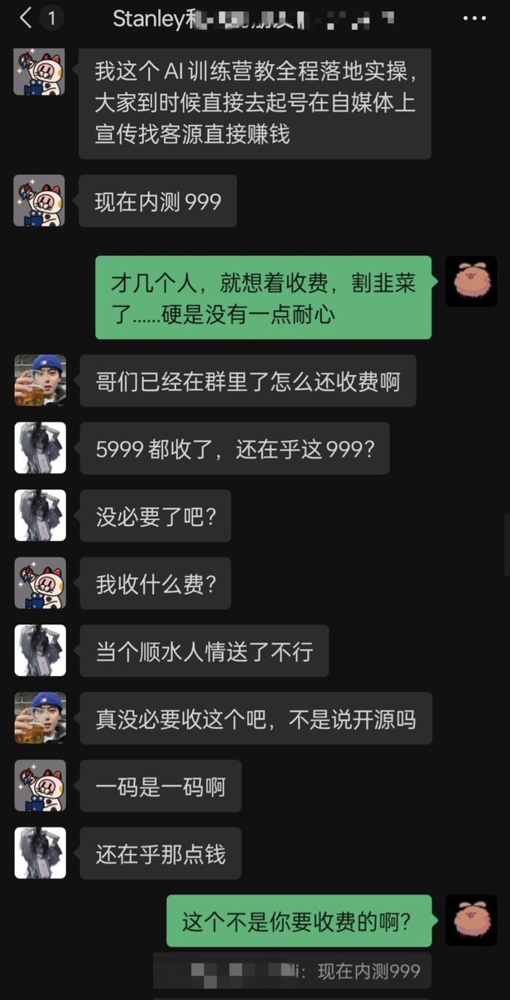
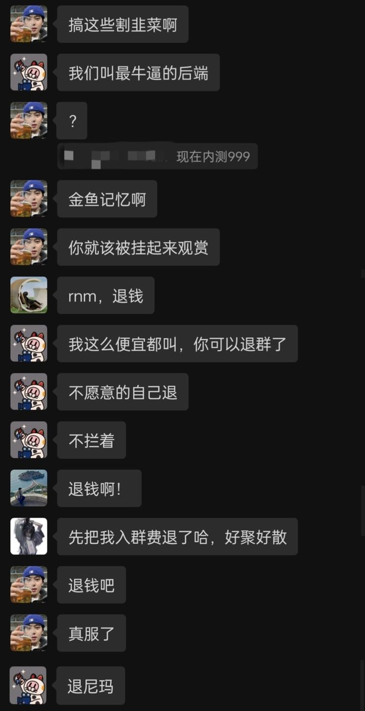

Aoi M
@aoim33
看来当时我骂得没错
妈的，那群嘴我的来我这儿跪下给我道歉


Mr.Five
@0x_MrFive
你们那个什么S哥，最近的AI不行了，推特段子什么乱七八糟的东西，也没流量了
现在又在收费群整999收费了，可能是没流量，又开始博眼球了
我都不知道在里面的都是一些什么人，这玩意能学到什么？？？
只不过是吃了一点AI的流量，真觉得自己加入了顶级社交圈
总喜欢把一时的运气当做自己永远的能力 https://t.co/ZDjOvyx2Wk